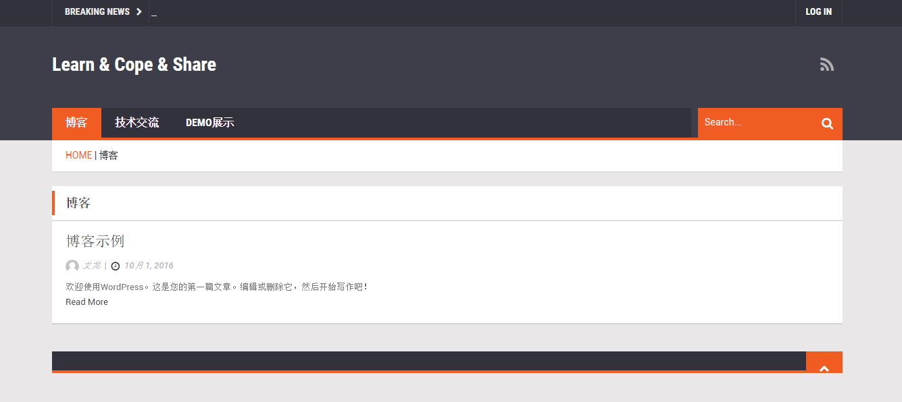

利用Docker快速搭建WordPress博客
读研一年多了，一直想着给课题组里搭建一个博客网站，方便小伙伴们分享各种技术、产品经验，同时团队也能沉淀下一些东西。十一刚好没有什么事情，就查了查资料，用Docker和WordPress搭建了一个博客网站。下面记录一下一些搭建过程。
选择
- WordPress: 世界上应用最广泛的开源博客程序，基于PHP和MySQL数据库，特点是：安装简便，出了名的5分钟安装，并且功能强大。只是使用的话，无需后期编程，鼠标点点、键盘敲敲即可满足需求。
- Docker：方便WordPress环境搭建以及后期备份，迁移。
Version 1 (不推荐)
安装Docker （CentOS 7 为例）
sudo yum update
sudo tee /etc/yum.repos.d/docker.repo <<-'EOF'
[dockerrepo]
name=Docker Repository
baseurl=https://yum.dockerproject.org/repo/main/centos/7/
enabled=1
gpgcheck=1
gpgkey=https://yum.dockerproject.org/gpg
EOF
sudo yum install docker-engine # Install the Docker package
sudo systemctl enable docker.service # Enable the service
sudo systemctl start docker # Start the Docker daemon.安装WordPress
使用WrodPress所需的基本环境：Apache + PHP + MySQL。本来想用Docker的lamp镜像，搜索了一下，发现WordPress就有镜像。但官方的WordPress镜像仍需要单独的MySQL数据库，后来搜索到了另外一个不错的镜像tutum/wordpress包含了WordPress运行所需的所有环境，所以直接拉取镜像、运行容器就好了。sudo docker pull tutum/wordpress # 拉取镜像
sudo docker run -d -p 80:80 tutum/wordpress "blog" # 运行容器
sudo curl http://localhost/ # 测试安装WordPress 自主配置(比较简单，细节不再累述)
- 设置账号基本信息，进入控制台
- 选择主题
- 按个人需求，安装插件(JP Markdown等)
- 配置页面布局
常用Docker命令
sudo systemctl enable docker.service # Enable the service
sudo systemctl start docker # Start the Docker daemon.
sudo docker images # Show local images
sudo docker run -d -p 80:80 tutum/wordpress "blog" # Run container
sudo docker stop "blog" # Stop container
sudo docker ps -a # Show container list
sudo docker export 7691a814370e > blog.tar # Export container
cat blog.tar | sudo docker import - tutum/wordpress blog.tar # Import container
Version 2 (推荐)
其实Docker官方有wordpress的安装实例文档，也可以实现一键安装，详情请见：Quickstart: Compose and WordPress
总结
本文仅仅是对Docker的简单使用，Docker、OpenStack相关的云平台、容器技术以后会继续关注。最后放一张搭建完的博客图。

主要参考
- 详细Docker安装即使用步骤请看 Docker官方文档
- Docker使用介绍 Docker —— 从入门到实践
- tutum/wordpress